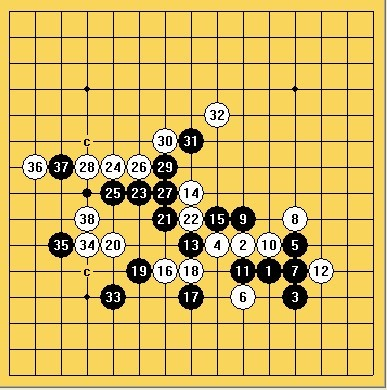
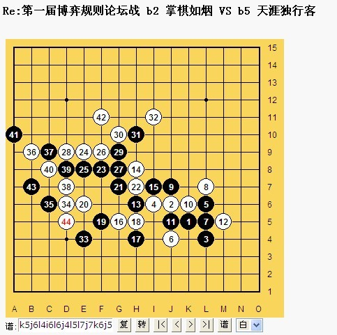
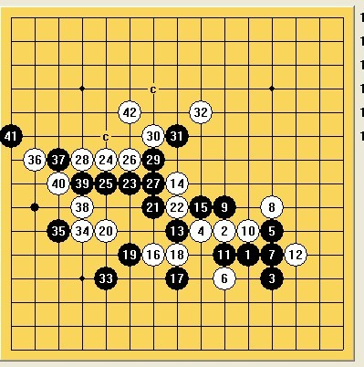

“西北狼”杯第一届博弈论坛战：温馨提示
#1 <font color="Gray">“西北狼”杯第一届博弈论坛战：温馨提示</font> 作者：踵酃 发表时间：2013-7-9 1:00:51
裁判长、裁判员应积极帮助参赛选手解决比赛过程中出现的各类问题。
关于论坛战的意见、建议、申诉可直接进入》》“西北狼”杯第一届博弈规则论坛战意见、建议、申诉楼
而其它在比赛中出现任何需要裁判处理的事物可直接在本贴跟帖提醒，裁判员会第一时间跟进。
比如：对局结束后需要裁判判决，或赛场上有人妨碍到您的对局等等事物。
未尽事宜，本着中立、实事求是、尊重当事人意见的原则
［此帖子已被 屏蔽 在 2013-10-1 6:12:19 编辑过］
#2 Re:“西北狼”杯第一届博弈论坛战：温馨提示 作者：釣鱼岛岛主 发表时间：2013-7-15 22:06:28
请问裁判,该贴目前到底轮到哪方行棋?
#3 Re:“西北狼”杯第一届博弈论坛战：温馨提示 作者：踵酃 发表时间：2013-7-15 22:15:29
该帖至目前位置，属于釣鱼岛岛主选手行棋。
#4 Re:“西北狼”杯第一届博弈论坛战：温馨提示 作者：掌棋如烟 发表时间：2013-7-15 22:15:36
ShowPost.asp?PageIndex=4&ThreadID=19864
同楼上问题,我该啥办?
对手下完35手,但我摆到了44手,发现对手在上图的39手还有两种选择,43手也有另两种选择,特请教裁判,该贴我该重回棋?还是让对手按图中36手后继续行棋?


#5 Re:“西北狼”杯第一届博弈论坛战：温馨提示 作者：踵酃 发表时间：2013-7-15 22:24:22
回3楼：
规则3.2:
非合理行棋将被裁判长、裁判员和另一对局方无视，除非另一对局方以包括但不限于继续行棋在内的手段明确表示理解或认可该非合理行棋，且这些手段不会引起对局及双方的矛盾或影响接下来的行棋。
#6 Re:“西北狼”杯第一届博弈论坛战：温馨提示 作者：茗弈七夜 发表时间：2013-7-16 10:12:56
另外补充说明一点：在我看来，上传地毯谱的性质帮别人行棋和帮别人挡冲4是完全两个人概念。
因为地毯谱是自己做的，每个人不可能都有正版终结者。即使有，扫描出来的结果也可能不同。同时，也不排除对方故意标c的欺骗性。
所以一方劝降，另一方不认可，想多走几步，我觉得完全在情理之中。一方劝降上传了地毯谱并帮对手行棋，而另一方不认可自己恢复行棋，这种情况我觉得正常，劝降和地毯谱只是参考，比赛应该以对手回复的明确坐标视为行棋。
而一方冲4对于另一方来只有唯一一个点可以行棋，而且这个点不需要什么计算。我觉得可以这么理解，一方冲四主动帮对方挡，就说明没有想过靠这个冲4或者耍耍手段去赢。因为谁都知道这是网战，冲4不挡几乎不可能。
当然如果有的棋手真的不愿意帮别人挡冲4，也不想别人帮他挡冲4，我想暂时也可以认可。因为规则里对于这一点没有明确定义。
但我觉得至少应该在对局中说明一下，让对手和大家都了解他这个想法吧！如果社呢么都不说，是否可以默认为其认可可以别人帮他挡冲4.
更为可笑的是：请看天涯和我的对局，之前他主动帮我挡冲4，然后我人可回复了，他也没说什么。而我帮他挡冲4时，他既不说明也不回棋。直到我重新回复只冲一个4，他才回复堵了这个冲4.包括对于掌棋如烟的对局他现在也是如法炮制。
那他这种行为，对于这个大家都默认的潜规则，他自己也没有通过回复表达给对手任何异议。但现在他在比赛中对自己有利时就帮别人挡冲4，而对自己不利时就用这种手段。其行为前后不一致，是否构成违例？是否有投机取巧之嫌？是否可以直接判负？
#7 Re:“西北狼”杯第一届博弈论坛战：温馨提示 作者：茗弈七夜 发表时间：2013-7-16 10:13:21
好的，第一个问题时间问题OK了，现在第二个问题：帮挡冲4是否可行？对方没有指出不认可，是否可以默认为对手认可？
同时对方对于帮挡冲4前后做法不一，如何判罚处理？谢谢裁判员~
#8 Re:“西北狼”杯第一届博弈论坛战：温馨提示 作者：天涯独行客 发表时间：2013-7-16 17:28:46
大家可以去看比赛帖啊，前面他报坐标，我没有表示任何异议，一直都是那么走，对帮着挡四的行为，我也做了，我们并没有争议，我只是拆棋慢了点，一直没有回棋，他就想当然，认为我搞什么鬼，自己莫名其妙地重新回了一次棋，我不知道他什么意思，也不想多事，就随手回了，这中间我有错吗？裁判也没有任何判罚，有必要那么大张旗鼓地进行指责，还强硬地要求裁判怎么样？我晕啊
我只想好好下棋，不想惹任何事情，没想到躺着也中枪啊
七夜兄啊，你长点脑子，去冷静地看看比赛的过程，好么？这样想当然地胡搅蛮缠，好玩吗？靠这样就能赢得比赛？你如果不是故意放如烟一盘，你本来是非常有希望出线的，现在你根本没有希望了，知道吗？醒醒吧，你以为我要靠拖你们的时间来，赢得比赛啊，我有这必要吗？我只不过一向拆棋比较慢，又喜欢慎之又慎，反复检查，所以才回棋非常慢，我想这不违反规程吧！也没有损伤到你什么吧。
最后提醒一句：和你的那盘棋，我已经彻底终结了，这两天没有很快地回棋，是看你还有其他比赛，不想打消你积极性罢了，本来想上传终结谱的，既然你那么铁心想试试，我们就慢慢走完吧！
#9 Re:“西北狼”杯第一届博弈论坛战：温馨提示 作者：踵酃 发表时间：2013-7-16 22:35:33
关于冲四帮挡的问题， 裁判认为帮挡冲四是人情， 不帮挡是道理。
所以不觉得会有人对帮挡冲四有意见。
当然了，不觉得，不代表没可能。 不过裁判员认为“在唯一防的情况下，帮挡冲四”属于合理行棋的范围 ”。 这个已经回答了计算时间的问题。
不过也因为规则没有明说，所以一方可以对此提出申诉。接不接受那是裁判长考虑的事。
#10 Re:“西北狼”杯第一届博弈论坛战：温馨提示 作者：天涯独行客 发表时间：2013-7-16 22:42:43
有事说事，该怎么样就怎么样，照章办事就是了，凭空猜疑，恶意诋毁，就没有必要了#11 Re:“西北狼”杯第一届博弈论坛战：温馨提示 作者：踵酃 发表时间：2013-7-16 22:47:00
请大家克制点，不要出言挑衅对手。
#12 Re:“西北狼”杯第一届博弈论坛战：温馨提示 作者：天涯独行客 发表时间：2013-7-16 23:04:22
对手恶意诋毁的时候，您没有任何表示，那么显而易见的胡闹，您非常冷静克制地和他沟通交流，
现在我不过做了些解释说明，对对手的攻击，进行了驳斥，您就及时站出来提醒我要克制，不要挑衅对手。
谢谢啊，我公正无私的裁判！！！
#13 Re:“西北狼”杯第一届博弈论坛战：温馨提示 作者：踵酃 发表时间：2013-7-16 23:16:52
我说的是“大家”呀。。。
七夜是提出规则的问题，他有疑问我自然得回答。
就像我说的， 我不觉得有人会为了冲4帮挡而申诉。 这不是间接的维护你了吗？
#14 Re:“西北狼”杯第一届博弈论坛战：温馨提示 作者：踵酃 发表时间：2013-7-16 23:19:11
好好比赛吧，你们的权益，裁判组会尽力维护的。
确实是以公正无私的原则为大家服务的。
#15 Re:“西北狼”杯第一届博弈论坛战：温馨提示 作者：天涯独行客 发表时间：2013-7-16 23:26:04
我和如烟的对局，我还没有认负，就判我输棋，凭什么？谁干的！！！！！！#16 Re:“西北狼”杯第一届博弈论坛战：温馨提示 作者：踵酃 发表时间：2013-7-16 23:41:25
操作失误，已经修正。